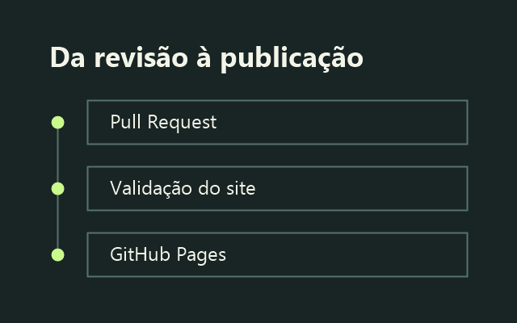

Portfólio com CI/CD
Site estático com validação de HTML, links e imagens em Pull Requests e publicação automática no GitHub Pages.
Portfólio profissional
Sou Onofre Augusto. Neste portfólio, apresento projetos web e a esteira que testa e publica o próprio site.
Ver projetos
Site estático com validação de HTML, links e imagens em Pull Requests e publicação automática no GitHub Pages.
Ferramenta web para formatar listas usadas em operações de rede.
Ver repositório